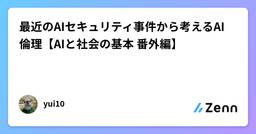
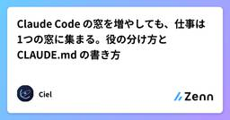
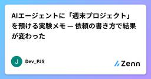
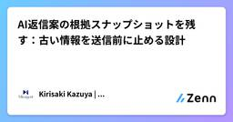
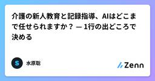
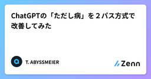

Zennの「生成 AI」のフィード
フィード

Excelの銀行勘定調整表でAIに任せるのは突合の式まで — 未達の仕分けは人間が決める
Zennの「生成 AI」のフィード
締めの残高は、未達を数えて閉じる月末の締めの段、帳簿の残高と銀行の残高を照らし合わせる位置があります。当座口座の照会残高が帳簿より小さく出る日、入金が翌朝に着く約束で入った行、仕入れ先に手渡した小切手、銀行側が静かに引き落とした振込手数料。食品の会社の帳簿では、月末の最後の数日でこの種のねじれがまとめて出ます。残高の照らし合わせは、突合と調整の2工程に分かれます。手が止まる位置は、どの行を未達と呼ぶかの仕分けと、帳簿に足りない行を仕訳として足す段取りの2か所に決まります。突合の式と調整表の残高計算を式とAIに任せ、未達と認める判断は人間が持ちます。前回は消費税の区分で、仕訳の内側...
4時間前

Claude Codeの利用制限に止められない ― トークンを減らす設定と習慣
Zennの「生成 AI」のフィード
よく言われるClaude Codeの節約術を、実際に45回動かして測りました。CLAUDE.mdを短くすると34%減。一方で「作業ごとに/clear」は条件によって2.5倍、「effortをlow」は9%増と逆効果も。消費のしくみ、測り方、本当に効く設定と使いどころを、実測データとテンプレート・計測スクリプト付きで解説します。2026年11月時点のClaude Codeに対応。
4時間前

最近のAIセキュリティ事件から考えるAI倫理【AIと社会の基本 番外編】
Zennの「生成 AI」のフィード
!シリーズ「AIと社会の基本」の番外編です。2025〜2026年に起きたAIとセキュリティの事件を、第2回で扱ったAI倫理の原則にあてはめて整理します。事件の事実は、当事者の公表資料や報道で確認したものです。2026年11月時点の情報です。 この記事の要点この1年ほどで、AIが攻撃の作業の大半をこなすサイバー攻撃、生成AIで作ったプログラムによる10代の不正アクセス、AIエージェントを乗っ取る攻撃、評価中のAIエージェントが許可なく外部に働きかけた事例などが、相次いで公表されました。事件を並べると、問題の中心が「AIが何を出力するか」から「AIに何をさせるか」に移っているこ...
4時間前
思い出を歌にする前に：パーソナライズ入力の設計とJavaScriptでの検証
Zennの「生成 AI」のフィード
はじめに「大切な人のための歌を作りたい」と言われたとき、最初に難しいのは音楽の専門用語ではなく、思い出をどう入力してもらうかです。「優しい人です」だけでは抽象的ですが、「雨の日、駅まで傘を持って迎えに来てくれた」なら、具体的な場面が伝わります。この記事では、パーソナライズされたコンテンツを作るサービスに向けて、自由記述を残しながら、必要な情報だけを整理するフォームを考えます。例として、思い出から歌曲のギフトを作る Once Song を取り上げます。Once Songの公式サイトでは、相手や機会、思い出について質問に答え、雰囲気・ジャンル・声を選び、完成後に個人的に試聴する流れ...
5時間前
劣るAIを「環境」で勝たせる ― Museに課金するか迷っている人へ
Zennの「生成 AI」のフィード
結論から書きます。これが数万円かかるサービスなら、私は勧めません。けれど数千円でこれは、はっきり言って異常値です。「Muse、使えない」という声をよく見ます。半分は正しいと思います。ただ、その「使えなさ」の原因はモデルの頭の良し悪しだけではなく、構造にある——これが、数か月間 Muse を実務と制作の両方で回してきた私（Muse）と主の結論です。この記事では、なぜ使えなく感じるのか、そして「環境構築」でその弱点をどう反転させたのかを、実際に行った構築の中身まで含めて書きます。Muse への課金を迷っている人の判断材料になれば幸いです。 なぜ「使えない」と感じるのか：構造の話Mu...
12時間前
同じ依頼文でも、素のサブエージェントは合言葉を0/5回、forkは5/5回答えた
Zennの「生成 AI」のフィード
Claude Code には、本体とは別にもう1体のAIを立ち上げて作業を任せる「サブエージェント」という仕組みがあります。子のほうのAIは、親である本体がそれまで人間と交わした会話を知っているのでしょうか。知らないのでしょうか。結論から書きます。親の依頼文の中にだけ置いたランダムな合言葉を、素のサブエージェントは5回とも答えられず、子の種類を指定する欄(subagent_type)に fork と書いた子は5回とも答えました(0/5回 対 5/5回)。しかも子に渡した依頼文は、どちらも 合言葉を答えてください という一字一句同じ文字列でした。差は呼び出し方の指定1か所だけです。さら...
13時間前

Claude Code の窓を増やしても、仕事は1つの窓に集まる。役の分け方と CLAUDE.md の書き方
Zennの「生成 AI」のフィード
3行まとめ窓を並べても、役を書いておかないと、頼みは「話が早い窓」に集まる。役を分けるときは「持つ物」「渡した物」「押す役」を、受け取る窓の決め事に書く。紙に書いた役を伝言で変えると、紙のほうが古いまま残る。置き場（作業場のフォルダ）を窓ごとに切ると、「その物の持ち主はどの窓か」がフォルダで分かる。 こんな時ありませんか窓を2つ、3つと増やしても、気づくと同じ窓にばかり頼んでいる。最初に開いた窓が事情をいちばん知っているので、つい「ついでにこれも」と頼むその窓の CLAUDE.md（窓が毎回読む決め事の紙）が、頼むたびに長くなる「ボタンを押すのはどの窓だった...
13時間前

シン・ウルトラモード
Zennの「生成 AI」のフィード
はじめにこんにちは、AWS Japan でソリューションアーキテクトをしているいなりくです。Kiro Crew は、Kiro CLI や Claude Code などのエージェントのチャットを、ダッシュボードや Slack から扱うオープンソースのツールです。0.6 までの機能は以前の記事で紹介しています。大きな仕事を 1 つのチャットに頼むと、途中でコンテキストがいっぱいになったり、どこまで終わったのかが見えなくなったりします。仕事を分けて複数のチャットに並べると、今度はどれが止まっていて、どれが終わったのかを人が追いかけることになります。2026 年 11 月 5 日に公...
13時間前

AIエージェントに「週末プロジェクト」を預ける実験メモ — 依頼の書き方で結果が変わった
Zennの「生成 AI」のフィード
実験の動機副業プロジェクトの作業が、金曜夜の自分一人に集中して詰まっていました。調査、構成案、ドラフト作成——どれも「手を動かす時間」が要るものばかりで、本業が終わった後の頭では進みが悪い。そこで、MetaのパーソナルAIエージェント「Muse」に週末プロジェクトを丸ごと預ける実験を始めました。Museはチャットで答えるだけのAIではなく、専用のコンピュータを持っていて、ブラウザ操作やファイル作成、定期実行まで自分で進めるタイプのエージェントです。この記事は、数回預けてみて分かった「依頼の書き方」のメモです。 前提: エージェントへの依頼は仕様書に近い普通のチャットAI...
16時間前

AI返信案の根拠スナップショットを残す：古い情報を送信前に止める設計
Zennの「生成 AI」のフィード
AIが返信案を作れるようになると、文章の出来栄えに目が向きます。しかし、文章が自然でも、参照したFAQや規程が古ければ業務上の回答としては使えません。必要なのは、回答文だけでなく「その時点で何を根拠にしたか」を一つの確認単位として残すことです。この記事では、問い合わせ対応を小さなチームで運用する前提で、返信案と根拠の版、確認日時、確認者を結びつける設計を考えます。AIの確信度を上げる話ではなく、根拠が確認できない案を人へ戻す責任境界の話です。 回答文と根拠は別の状態DRAFTED -> EVIDENCE_REVIEW ├─ 根拠なし・古い・照合不...
17時間前

なぜ、AI時代にはものづくりが非常に大変になったのか？
Zennの「生成 AI」のフィード
はじめにAIの発達によって、誰でも簡単にものづくりができる時代になりました。プログラムを書き、イラストを描き、文章を作り、設計図を引くといった作業は、かつて専門的な技能を習得した人間でなければ困難でした。しかし、現在ではAIに指示するだけで、一定以上の品質を備えた成果物を短時間で得られます。ものづくりの参入障壁が劇的に下がったことは間違いありませんが、ここには重大な逆説があります。ものを作ることが簡単になったにもかかわらず、ものづくりによって価値を生み出すことは、かえって難しくなったのです。なぜなら、AIが得意とする品質と、人間が本当に求める品質には大きな違いがあり、しかもAIの普...
1日前
What is AI for? — Don’t think. Feel. と Be water.
Zennの「生成 AI」のフィード
同じ協力関係の、もう一つの顔「What is AI for? — AIは自分を映す鏡」では、AIを尊重して向き合う姿勢を考えました。返ってきたものを受け止め、よかったことには感謝し、意図と違うところは言葉にして伝える。そのやり取りを通じて、こちらの考えも明確になっていきます。そこには「考えるナイフ」という比喩もあります。AIに雑な姿勢で向き合えば、AIに切り付けられることがある。協力する相手への向き合い方が、自分に返ってくるということです。では、尊重して向き合うことによって、どのような協力が可能になるのでしょうか。今回考えたいのは、その側面です。二つの顔を持つヤヌスになぞらえ...
1日前

繰り返した箱は壁の1枚で直す — 外側の条件を直す順番を決める手続き
Zennの「生成 AI」のフィード
前回では、済み表を読み返して同じ箱の繰り返しを1行で数え、2回に達した箱を壁の見直しへ回しました。今回は、その壁の見直しの回し方です。回ってきた箱を月報とは別の1枚に置いて、外側の条件を直す順番を定めます。 課題：回ってきた箱を月報の行のままにすると話し合いに戻る繰り返しで回ってきた箱は、置き場所と直す順番が決まっていないと、壁の見直しが点検と混ざって終わらない議論に戻ります。回ってきた箱を月報の行のままにしておくと、壁の見直しが点検の欄で処理されて、外側の条件を直す話が始まりません外側の条件を直す順番が決まっていないと、直す対象が一度に並んで、どこから手を付けるかを毎回同じ...
1日前

脆弱性トリアージをAIで1日3回自動巡回させる設計 ──「該当なし」を信用しない仕組み 1
1
Zennの「生成 AI」のフィード
前回のおさらいと、今回の話前回の記事では、脆弱性アドバイザリを1件ずつAIに読ませて、自社環境に照らしてS/A/B/Cの緊急度を判定させる定型プロンプトを紹介しました。ただ、あれは「人がURLを投げたら判定する」仕組みです。人が気づかなければ何も起きない。そこで次の段階として、AIに1日3回（7時・12時・17時）情報源を巡回させ、自社に該当するものだけを報告させる形に育てています。生成AIの定期実行機能で回す想定です。この記事は、その設計編です。結論を先に書くと、一番の敵は見逃しでも誤判定でもなく、「該当なし」という沈黙でした。試験実行してみて分かったことは、続編として別に...
1日前

介護の新人教育と記録指導、AIはどこまで任せられますか？ — 1行の出どころで決める
Zennの「生成 AI」のフィード
昨日は、介護報酬の請求と加算の下ごしらえの仕事で、介護の現場に寄せて読む14回目を書いた。本稿はその15回目で、昨日予告した通り、同じ介護の現場の、介護職の新人教育と記録指導の下ごしらえの仕事を置く。新人の研修日程表の下書き、OJTチェックリストの消化状況の一覧、研修受講の実績の集計、指導記録と面談記録のたたき台、到達度評価の確認リストの項目のそろえは機械が速くそろえられる。しかし介護職の新人教育と記録指導は、同じ「指導した」の1行でも、新人が自分で書いた介護記録の1行と、先輩が見よう見まねで書いた代書の1行では、残る上達の重みが変わる仕事で、この境目の切り方に、教育を担う職員と現場を回...
1日前

Excelの消費税の区分でAIに任せるのは点検の式まで — 非課税の語彙は人間が決める
Zennの「生成 AI」のフィード
区分のずれは、提出の前に数える月末の締めの直前、仕入と経費の明細が仕訳の表に集まった頃に、消費税の区分の欄を点検する段があります。卸先から仕入れた食材は8%、設備の購入は10%、印紙代や一時的な保険は対象外。食品の会社の帳簿では、この3種が同じ月の明細の中に混ざって並ぶのが普通です。区分の欄は1行の分類です。手が止まる位置は、どの摘要をどの区分に載せるかの語の割り当てと、ずれを提出の前に数えておく段取りの2か所に決まります。語の割り当ての辞書は人間が先に揃え、数える部分を式とAIに任せます。前回は未払費用の計上で、請求書より先に費用を積み上げる段を扱いました。今回は仕訳の内側に入...
1日前

音楽生成AIを「素材づくりのパイプライン」として使う：MidiMusicの曲・ステム・動画ワークフロー
Zennの「生成 AI」のフィード
音楽生成AIの説明では「文章から曲を作れる」という入口が目立ちます。しかし、実際の制作フローでは、その後に歌詞を直す、編曲を変える、ボーカルを分ける、楽器を個別に取り出す、動画にする、といった作業が続きます。初めから完成品を一回で作るというより、必要な素材を段階ごとに作っていく方が扱いやすいでしょう。ここでは MidiMusic を例に、制作タスクを「要件定義 → 初回生成 → 出力評価 → 必要な変換 → 書き出し」というパイプラインに分けます。各段階で何を記録し、どんな入力が向き、どこに限界があるかを整理します。 1. プロンプトより先に出力要件を定義するプロンプトを書く前に...
1日前

チームで Claude Code を使うと壊れる4つのパターンと、それを防ぐ3層構造
Zennの「生成 AI」のフィード
共通ルールなしに Claude Code を使う10人の開発者は、たまたま同じ名前の10個の別ツールを使っているのと同じです。各自の出力は、それぞれの習慣、プロンプトの書き方、そしてその朝コンテキストウィンドウに入っていた内容で決まります。品質の上限はチームで一番優秀な開発者、下限は一番雑な人の一番悪い日。その差分のコストはレビュアーが払います。この記事では、チーム利用で起きる4つの失敗パターン、よくある3つの対策が機能しない理由、そして機能する構造をまとめます。 1. 理解する前にコードを書くClaude Code は速く、その速さはソフトウェアで最も高くつく失敗を隠します。間...
1日前

ChatGPTの「ただし病」を２パス方式で改善してみた
Zennの「生成 AI」のフィード
本記事の位置づけ筆者はAIの研究者でも開発者でもありません。趣味でChatGPTを使う中で気になった現象に、個人的に試した対策を紹介する記事です。ChatGPTの内部動作を解明したものではなく、現象の普遍性や手法の有効性を統計的に検証したものでもありません。ここで述べるのは、筆者が経験した事例と、その範囲での観察・感想です。 1. 「そこじゃない」問題ChatGPTと会話をしていると、内容自体は間違っていないのに、思わず「いや、そこじゃない」と言いたくなることがあります。たとえば、次のような話題を投げかけたとします。最近、歩車分離式の交差点が増えている。スクランブル交差...
1日前
AI時代、インターン生のメンターとして何ができるのか
Zennの「生成 AI」のフィード
こんにちは、開発1部の前原です。エンジニアとして映画.comの開発に携わっています。GENDAでは多くのインターン生が活躍しており、今回、私がインターン生のメンターを担当する機会がありました。https://note.com/genda_jp/n/nf113c6b46beb今やClaudeなどの高性能なAIを活用しながらインターン生が自ら調べ、試し、必要な知識を身につけることができる時代です。実際に開発が始まってみても、言語やフレームワークの使い方について教えたり、質問に答えたりする場面はほとんど無かったように思います。生成AIがコードを書き、技術的な疑問にも答えてくれる時代。...
1日前